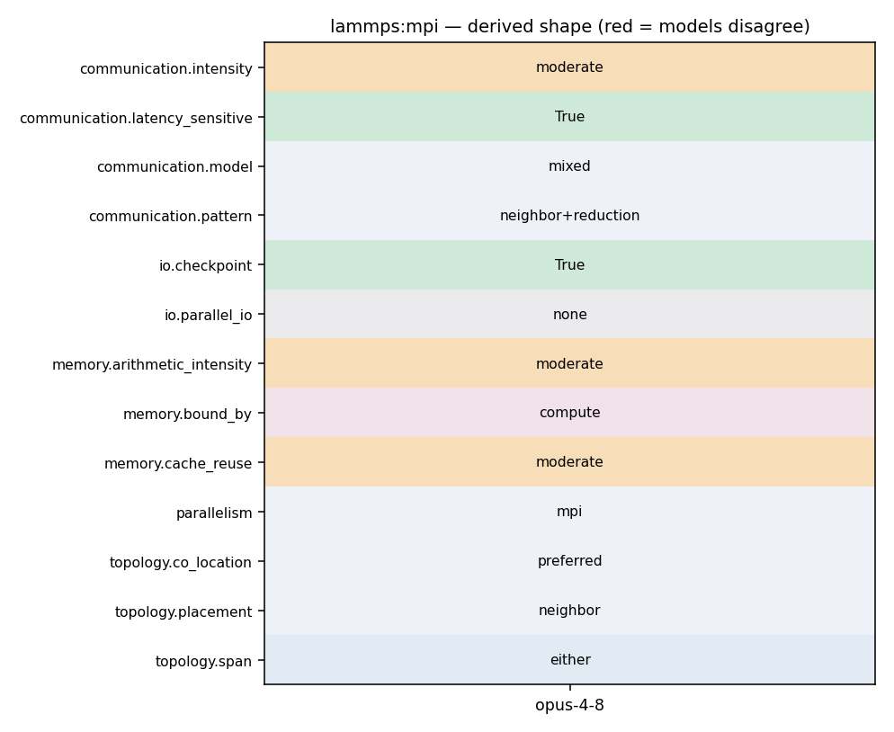

mpirun -np N lmp -in in.reaxff
784 b_norm = parallel_norm(b, nn); 785 sig_new = parallel_dot(r, d, nn); 786 787 for (i = 1; i < imax && sqrt(sig_new) / b_norm > tolerance; ++i) { 788 comm->forward_comm(this); //Dist_vector(d); 789 sparse_matvec(&H, d, q); 790 comm->reverse_comm(this); //Coll_vector(q); 791 792 tmp = parallel_dot(d, q, nn); 793 alpha = sig_new / tmp; 794 795 vector_add(x, alpha, d, nn); 796 vector_add(r, -alpha, q, nn); 797 798 // pre-conditioning 799 for (jj = 0; jj < nn; ++jj) { 800 j = ilist[jj]; 801 if (atom->mask[j] & groupbit) 802 p[j] = r[j] * Hdia_inv[j]; 803 } 804 805 sig_old = sig_new; 806 sig_new = parallel_dot(r, p, nn); 807
73 { 74 scalar_flag = 1; 75 extscalar = 0; 76 imax = 200; 77 maxwarn = 1; 78 79 if ((narg < 8) || (narg > 12)) error->all(FLERR,"Illegal fix qeq/reaxff command");
784 b_norm = parallel_norm(b, nn); 785 sig_new = parallel_dot(r, d, nn); 786 787 for (i = 1; i < imax && sqrt(sig_new) / b_norm > tolerance; ++i) { 788 comm->forward_comm(this); //Dist_vector(d); 789 sparse_matvec(&H, d, q); 790 comm->reverse_comm(this); //Coll_vector(q); 791 792 tmp = parallel_dot(d, q, nn); 793 alpha = sig_new / tmp; 794 795 vector_add(x, alpha, d, nn); 796 vector_add(r, -alpha, q, nn); 797 798 // pre-conditioning 799 for (jj = 0; jj < nn; ++jj) { 800 j = ilist[jj]; 801 if (atom->mask[j] & groupbit) 802 p[j] = r[j] * Hdia_inv[j]; 803 } 804 805 sig_old = sig_new; 806 sig_new = parallel_dot(r, p, nn); 807
785 sig_new = parallel_dot(r, d, nn); 786 787 for (i = 1; i < imax && sqrt(sig_new) / b_norm > tolerance; ++i) { 788 comm->forward_comm(this); //Dist_vector(d); 789 sparse_matvec(&H, d, q); 790 comm->reverse_comm(this); //Coll_vector(q); 791 792 tmp = parallel_dot(d, q, nn); 793 alpha = sig_new / tmp;
1048 my_sum += SQR(v[i]); 1049 } 1050 1051 MPI_Allreduce(&my_sum, &norm_sqr, 1, MPI_DOUBLE, MPI_SUM, world); 1052 1053 return sqrt(norm_sqr); 1054 }
785 sig_new = parallel_dot(r, d, nn); 786 787 for (i = 1; i < imax && sqrt(sig_new) / b_norm > tolerance; ++i) { 788 comm->forward_comm(this); //Dist_vector(d); 789 sparse_matvec(&H, d, q); 790 comm->reverse_comm(this); //Coll_vector(q); 791
787 for (i = 1; i < imax && sqrt(sig_new) / b_norm > tolerance; ++i) { 788 comm->forward_comm(this); //Dist_vector(d); 789 sparse_matvec(&H, d, q); 790 comm->reverse_comm(this); //Coll_vector(q); 791 792 tmp = parallel_dot(d, q, nn); 793 alpha = sig_new / tmp;
782 } 783 784 b_norm = parallel_norm(b, nn); 785 sig_new = parallel_dot(r, d, nn); 786 787 for (i = 1; i < imax && sqrt(sig_new) / b_norm > tolerance; ++i) { 788 comm->forward_comm(this); //Dist_vector(d); 789 sparse_matvec(&H, d, q); 790 comm->reverse_comm(this); //Coll_vector(q); 791 792 tmp = parallel_dot(d, q, nn); 793 alpha = sig_new / tmp; 794 795 vector_add(x, alpha, d, nn); 796 vector_add(r, -alpha, q, nn); 797 798 // pre-conditioning 799 for (jj = 0; jj < nn; ++jj) { 800 j = ilist[jj]; 801 if (atom->mask[j] & groupbit) 802 p[j] = r[j] * Hdia_inv[j]; 803 } 804 805 sig_old = sig_new;
1 /* -*- c++ -*- ---------------------------------------------------------- 2 LAMMPS - Large-scale Atomic/Molecular Massively Parallel Simulator 3 https://www.lammps.org/, Sandia National Laboratories 4 LAMMPS development team: developers@lammps.org
1013 pack values in local atom-based array for exchange with another proc 1014 ------------------------------------------------------------------------- */ 1015 1016 int FixQEqReaxFF::pack_exchange(int i, double *buf) 1017 { 1018 for (int m = 0; m < nprev; m++) buf[m] = s_hist[i][m]; 1019 for (int m = 0; m < nprev; m++) buf[nprev+m] = t_hist[i][m]; 1020 return nprev*2; 1021 } 1022 1023 /* ---------------------------------------------------------------------- 1024 unpack values in local atom-based array from exchange with another proc 1025 ------------------------------------------------------------------------- */ 1026 1027 int FixQEqReaxFF::unpack_exchange(int nlocal, double *buf) 1028 { 1029 for (int m = 0; m < nprev; m++) s_hist[nlocal][m] = buf[m]; 1030 for (int m = 0; m < nprev; m++) t_hist[nlocal][m] = buf[nprev+m]; 1031 return nprev*2; 1032 } 1033 1034 /* ---------------------------------------------------------------------- */
498 // Store the different parts of the energy 499 // in a list for output by compute pair command 500 501 pvector[0] = api->data->my_en.e_bond; 502 pvector[1] = api->data->my_en.e_ov + api->data->my_en.e_un; 503 pvector[2] = api->data->my_en.e_lp; 504 pvector[3] = 0.0; 505 pvector[4] = api->data->my_en.e_ang; 506 pvector[5] = api->data->my_en.e_pen; 507 pvector[6] = api->data->my_en.e_coa; 508 pvector[7] = api->data->my_en.e_hb; 509 pvector[8] = api->data->my_en.e_tor; 510 pvector[9] = api->data->my_en.e_con; 511 pvector[10] = api->data->my_en.e_vdW; 512 pvector[11] = api->data->my_en.e_ele; 513 pvector[12] = 0.0; 514 pvector[13] = api->data->my_en.e_pol; 515 } 516 517 if (vflag_fdotr) virial_fdotr_compute();
498 // Store the different parts of the energy 499 // in a list for output by compute pair command 500 501 pvector[0] = api->data->my_en.e_bond; 502 pvector[1] = api->data->my_en.e_ov + api->data->my_en.e_un; 503 pvector[2] = api->data->my_en.e_lp; 504 pvector[3] = 0.0; 505 pvector[4] = api->data->my_en.e_ang; 506 pvector[5] = api->data->my_en.e_pen; 507 pvector[6] = api->data->my_en.e_coa; 508 pvector[7] = api->data->my_en.e_hb; 509 pvector[8] = api->data->my_en.e_tor; 510 pvector[9] = api->data->my_en.e_con; 511 pvector[10] = api->data->my_en.e_vdW; 512 pvector[11] = api->data->my_en.e_ele; 513 pvector[12] = 0.0; 514 pvector[13] = api->data->my_en.e_pol; 515 } 516 517 if (vflag_fdotr) virial_fdotr_compute();
498 // Store the different parts of the energy 499 // in a list for output by compute pair command 500 501 pvector[0] = api->data->my_en.e_bond; 502 pvector[1] = api->data->my_en.e_ov + api->data->my_en.e_un; 503 pvector[2] = api->data->my_en.e_lp; 504 pvector[3] = 0.0; 505 pvector[4] = api->data->my_en.e_ang; 506 pvector[5] = api->data->my_en.e_pen; 507 pvector[6] = api->data->my_en.e_coa; 508 pvector[7] = api->data->my_en.e_hb; 509 pvector[8] = api->data->my_en.e_tor; 510 pvector[9] = api->data->my_en.e_con; 511 pvector[10] = api->data->my_en.e_vdW; 512 pvector[11] = api->data->my_en.e_ele; 513 pvector[12] = 0.0; 514 pvector[13] = api->data->my_en.e_pol; 515 } 516 517 if (vflag_fdotr) virial_fdotr_compute();
833 for (i = atom->nlocal; i < nall; ++i) 834 b[i] = 0; 835 836 for (ii = 0; ii < nn; ++ii) { 837 i = ilist[ii]; 838 if (atom->mask[i] & groupbit) { 839 for (itr_j=A->firstnbr[i]; itr_j<A->firstnbr[i]+A->numnbrs[i]; itr_j++) { 840 j = A->jlist[itr_j]; 841 b[i] += A->val[itr_j] * x[j]; 842 b[j] += A->val[itr_j] * x[i]; 843 } 844 } 845 } 846 847 } 848
1048 my_sum += SQR(v[i]); 1049 } 1050 1051 MPI_Allreduce(&my_sum, &norm_sqr, 1, MPI_DOUBLE, MPI_SUM, world); 1052 1053 return sqrt(norm_sqr); 1054 }
771 772 pack_flag = 1; 773 sparse_matvec(&H, x, q); 774 comm->reverse_comm(this); //Coll_Vector(q); 775 776 vector_sum(r , 1., b, -1., q, nn); 777
785 sig_new = parallel_dot(r, d, nn); 786 787 for (i = 1; i < imax && sqrt(sig_new) / b_norm > tolerance; ++i) { 788 comm->forward_comm(this); //Dist_vector(d); 789 sparse_matvec(&H, d, q); 790 comm->reverse_comm(this); //Coll_vector(q); 791 792 tmp = parallel_dot(d, q, nn); 793 alpha = sig_new / tmp; 794 795 vector_add(x, alpha, d, nn); 796 vector_add(r, -alpha, q, nn); 797 798 // pre-conditioning 799 for (jj = 0; jj < nn; ++jj) { 800 j = ilist[jj]; 801 if (atom->mask[j] & groupbit) 802 p[j] = r[j] * Hdia_inv[j]; 803 } 804 805 sig_old = sig_new; 806 sig_new = parallel_dot(r, p, nn); 807 808 beta = sig_new / sig_old;
785 sig_new = parallel_dot(r, d, nn); 786 787 for (i = 1; i < imax && sqrt(sig_new) / b_norm > tolerance; ++i) { 788 comm->forward_comm(this); //Dist_vector(d); 789 sparse_matvec(&H, d, q); 790 comm->reverse_comm(this); //Coll_vector(q); 791 792 tmp = parallel_dot(d, q, nn); 793 alpha = sig_new / tmp;
386 int mincap = api->system->mincap; 387 double safezone = api->system->safezone; 388 389 api->system->n = atom->nlocal; // my atoms 390 api->system->N = atom->nlocal + atom->nghost; // mine + ghosts 391 oldN = api->system->N; 392 393 if (setup_flag == 0) {